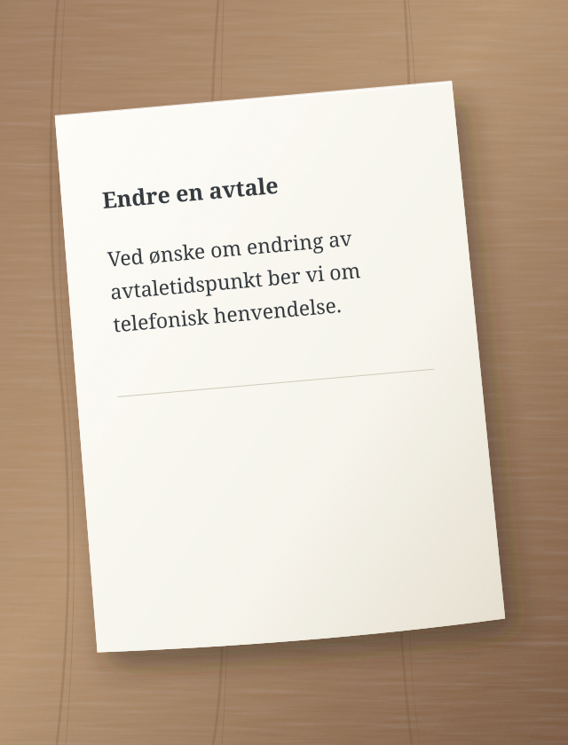
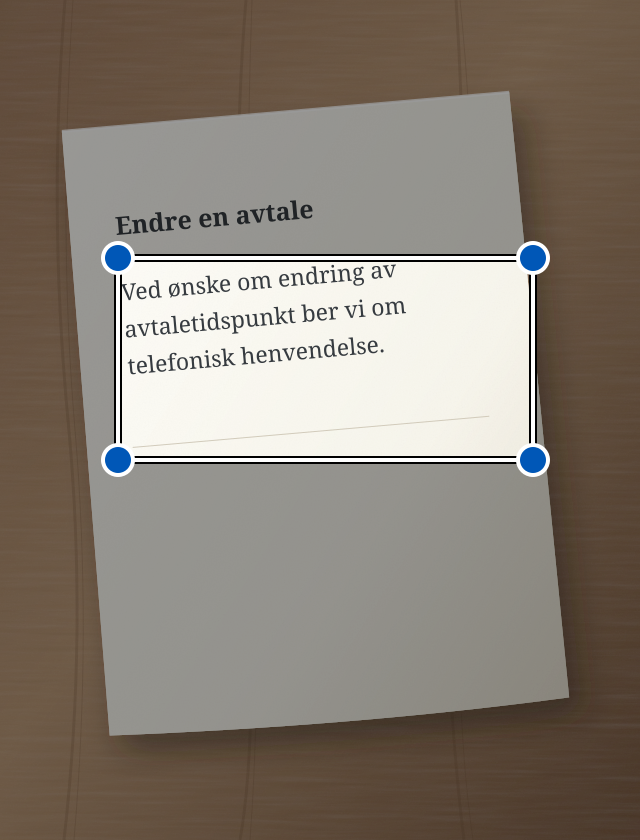

Et offentlig brev, en lang melding, en vanskelig bruksanvisning. Sedno hjelper deg å forstå dem med enklere ord. Appen kan også rette teksten din og lese den høyt.
Ved ønske om endring av avtaletidspunkt ber vi om telefonisk henvendelse.
↳ Forenklet tekst
Vil du endre timen din? Ring oss.
Et eksempel som viser forenkling av tekst.
Lettere å forstå. Lettere å handle.
Enkelt språk er for alle.
Vi lager Sedno særlig for hørselshemmede og mennesker som synes komplekse tekster er vanskelige å forstå. Enklere ord kan hjelpe oss alle.
Fra ord til mening
To enkle steg.
01
Legg til tekst
Skriv, lim inn, ta et bilde eller snakk.
02
Forenkle eller rett
Velg det du trenger. Resultatet vises i samme felt. Du kan fortsette å redigere det.
i KI kan gjøre feil. Sjekk viktig informasjon i originalen.
Se hvor du skal trykke
Sedno, steg for steg.
Hvert eksempel viser én oppgave. En sirkel viser hvor du skal trykke. En pil viser hva som skjer etterpå.
Dette er forenklede tegninger av skjermene. Tekstene er eksempler. Appen kan se litt annerledes ut.
Forenkle skrevet tekst
En vanskelig melding? Skriv eller lim den inn i Sedno.
1 Skriv teksten og trykk «Forenkle».
Sjekk at modusen Forenkle er valgt.
Sedno – forenkle tekst:
Ved ønske om endring av avtaletidspunkt ber vi om telefonisk henvendelse.
Forenkle
2 Les den enklere teksten.
Resultatet vises i samme felt. Du kan redigere det.
Forenklet tekst
Vil du endre timen din? Ring oss.
KI kan ta feil
Forenkle
Forenkle tekst fra et bilde
Et brev på papir? Ta et bilde i Sedno.
1 Trykk på kameraet.
Kameraet i appen åpnes.
Sedno – forenkle tekst:
Skriv eller lim inn tekst
Forenkle
2 Trykk «Ta bilde».
Hold telefonen slik at hele arket og teksten er tydelige.
Ta bilde av tekst

Ta bilde
3 Marker teksten og trykk «Forenkle».
Flytt hjørnene rundt teksten du vil forenkle.
Marker tekst
Flytt hjørnene på rammen for å markere teksten.

Forenkle
4 Les den enklere teksten.
Sedno leser teksten fra bildet og forenkler den.
Forenklet tekst
Vil du endre timen din? Ring oss.
KI kan ta feil
Forenkle
Bildet blir på telefonen. Bare gjenkjent tekst sendes til KI. Hvis forenklingen mislykkes, blir teksten i feltet slik at du kan redigere den.
Forenkle tale
Vil du heller snakke enn å skrive? Velg modusen Forenkle.
1 Trykk på mikrofonen.
Tillat mikrofontilgang hvis telefonen spør.
Sedno – forenkle tekst:
Skriv eller lim inn tekst
Forenkle
2 Si teksten høyt.
Snakk på det valgte språket. Ta en kort pause til slutt.
Snakk på det valgte språket
Sedno gjør tale om til tekst.
3 Les den enklere teksten.
Etter 1,5 sekunder med stillhet forenkler Sedno den gjenkjente teksten automatisk.
Forenklet tekst
Vil du endre timen din? Ring oss.
KI kan ta feil
Forenkle
Tale gjenkjennes på telefonen. Du trenger Android 13 eller nyere, en kompatibel enhet og en nedlastet modell for valgt språk. Opptaket varer høyst ett minutt. Stopp avbryter opptaket.
Rett skrevet tekst
Vil du rette feil i meldingen? Velg modusen Rett før du skriver.
1 Skriv teksten og trykk «Rett».
Bytt modus med pilene over den store knappen.
Sedno – rett tekst:
jeg kan ike komme på møte i morgen
Rett
2 Les den rettede teksten.
Sedno retter feil. Sjekk at teksten sier det du mener.
Rettet tekst
Jeg kan ikke komme på møtet i morgen.
KI kan ta feil
Rett
Lytt til rettet tekst
I modusen Rett kan telefonen lese teksten i feltet høyt.
1 Trykk på høyttaleren.
Rett teksten først. Trykk så på høyttaleren til venstre.
Opplesningen skjer på telefonen. Last ned en stemme for valgt språk som virker uten internett, i telefoninnstillingene.
Språk
Velg ditt språk.
Sedno støtter 13 språkvarianter. Åpne menyen i appen og velg Språk. Valget gjelder også tekst, diktering og opplesning. Sedno forenkler og retter; appen oversetter ikke mellom språk.
Dine tekster. Din kontroll.
Personvern fra starten.
Bilder og lyd blir på telefonen. Bare tekst sendes til KI.